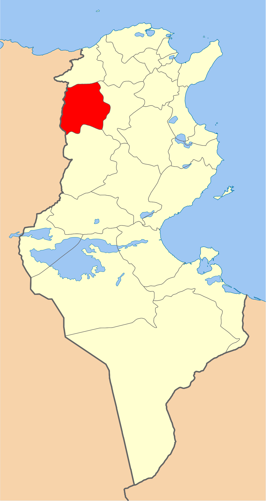
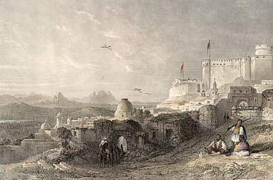
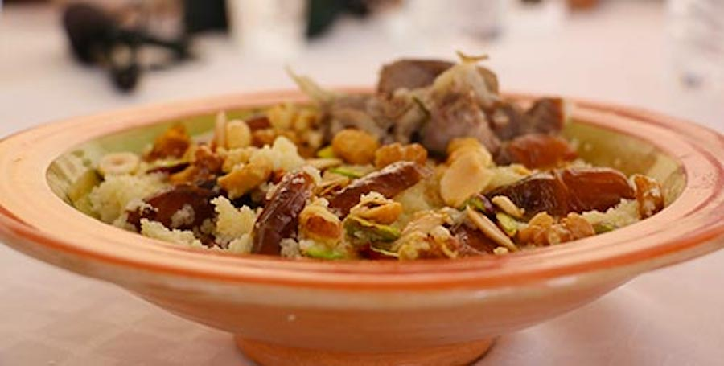
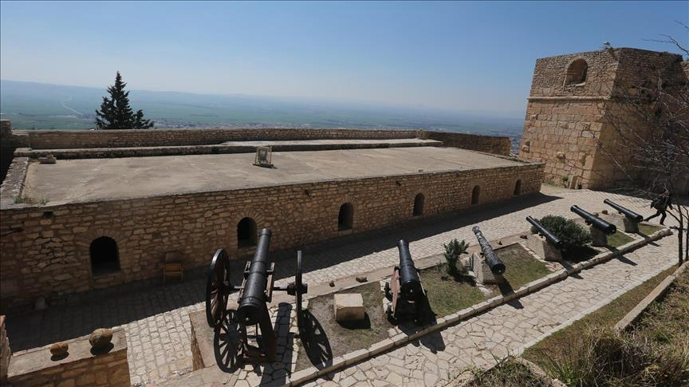
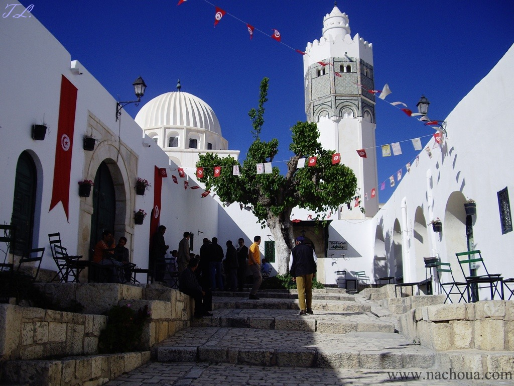

Le Kef
Le gouvernorat du Kef est situé dans la région du haut Tell supérieur de la Tunisie, il est limité par les gouvernorats de Jendouba au Nord, Siliana à l´Est, Kasserine au Sud et l´Algérie à l´Ouest. La région est essentiellement agricole et connaît une activité industrielle naissante avec un accent mis sur les unités de service (les nouvelles technologies de communication).
La Kasbah
Musée des arts et traditions
Mausolée de Sidi Bou Makhlouf
Barrage Mellegue
Quelques chiffres
Superficie
5 081 Km²
Nombre de maisons
24 000
Habitants
243 156
Localisation
Grande ville la plus élevée de Tunisie, à 627 mètres d'altitude, sa superficie urbanisée atteint 2 500 hectares dont 45 sont situés à l'intérieur des anciens remparts de la médina. Le territoire de la ville du Kef est délimité par Nebeur au nord, Dahmani, Tajerouine et Le Sers au sud, Sakiet Sidi Youssef à l'ouest et le gouvernorat de Siliana à l'est.

Histoire
Anciennement appelée Colonia Iulia Veneria Cirta Nova Sicca, elle fait l'objet de discussions entre historiens en tant que localisation potentielle de la capitale de la Numidie évoquée par Salluste dans son Bellum Jugurthinum l'autre hypothèse étant la ville de Constantine en Algérie. Cette controverse est connue sous le nom de problème de Cirta. En 688, la ville connaît un premier raid des armées arabes. En 1600, un premier fort est construit pour abriter à partir de 1637 une garnison permanente (oujaq) ; le dispositif est complété par des remparts fortifiés édifiés par Ali Ier Pacha vers 1739-1740. Ceci n'empêche toutefois pas la prise et le pillage de la cité par les Algériens en 1756, ni l'occupation militaire française à partir de 1881. Par le décret beylical du 8 juillet 1884, Le Kef est érigé en municipalité, l'une des premières du pays. En 1973, la ville accueille un sommet entre les présidents tunisien Habib Bourguiba et algérien Houari Boumédiène ; ce dernier propose la constitution d'une union tuniso-algérienne que Bourguiba décline en mettant en avant le développement de la coopération économique entre les deux pays.

Culture
 hover me
hover me

hover me
hover me
hover me